2023年2月27日，JumpServer开源堡垒机正式发布v3.0版本。在JumpServer开源堡垒机v3.0版本的设计过程中，我们始终秉持着“内外兼修”的原则，旨在进一步提升用户的使用体验，真正用心做好一款开源堡垒机。
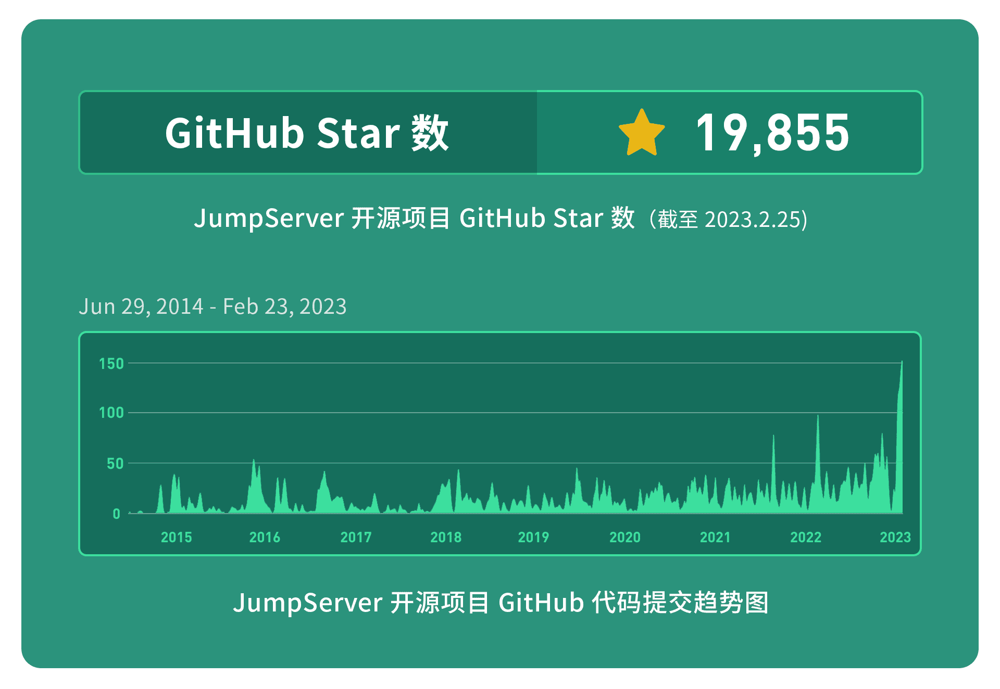
在JumpServer v3.0版本中，我们针对用户体验进行了全新升级；资产管理方面，将资产和应用进行了合并，全面重构账号体系，同时增加了账号模版功能，提高了管理员对同类型账号的管理效率。另外，将资产和账号进行强关联，使得JumpServer能够更加准确地描述一个资产上的所有账号信息；权限管理方面，将资产授权、资产登录和命令过滤功能进行整合，这样一来，管理员可以更方便地管控用户授权的资产、登录资产的条件，以及登录资产后的具体操作。
除此之外，远程应用管理是JumpServer v3.0版本的亮点功能之一。它主要包括远程应用和远程应用发布机两个部分。其中，远程应用会在用户连接资产时进行自动拉起，而远程应用发布机则是使用远程应用功能时必备的资源，主要用于安装和连接远程应用。
审计方面，新版本的JumpServer按照时间线记录了实体资源的活动日志，管理员可以在“资源详情”中进行查看。同时，这一版本还对作业中心进行了全面改版，主要包括快捷命令、作业管理、模版管理以及执行历史功能，有效提升用户的运维效率。
一、用户体验全新升级
在JumpServer v3.0版本中，由专业设计师对JumpServer的界面进行了重新设计，操作界面全新升级，仪表盘数据更加直观，整体布局简约清晰，操作体验更加流畅，大幅提升了用户的使用体验。
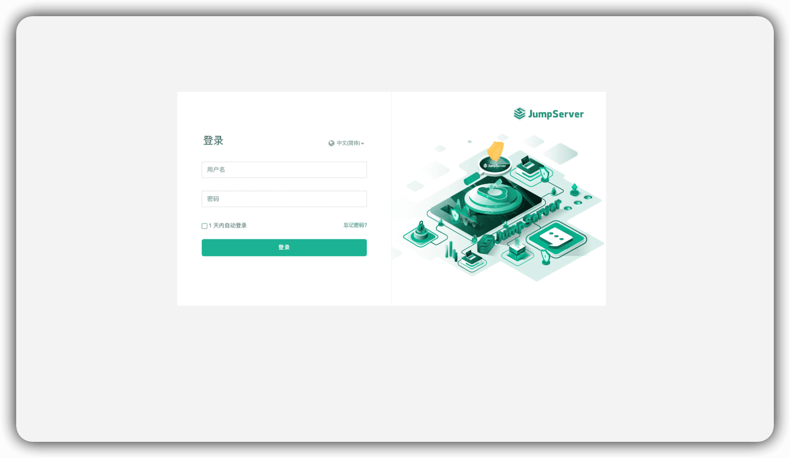
▲ 图1 JumpServer v3.0登录页面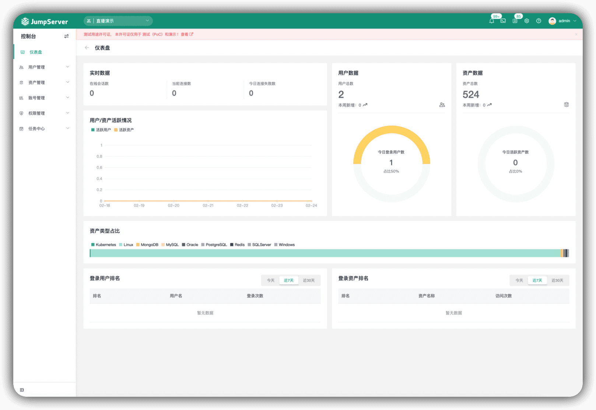
▲ 图2 JumpServer v3.0仪表盘二、资产应用统一纳管
在JumpServer v3.0版本中，资产与应用合并统称为“资产”。合并后的资产种类主要包括主机、网络设备、数据库、云服务以及Web等。其中，每一种类之下又包含了不同的类型，比如：主机类别下包括Linux、Unix、Windows和Other等资产类型。
在资产树视图方面，新版JumpServer支持两种查看方式，一种是用户自定义节点的视图，另一种是系统内置的资产类型视图。
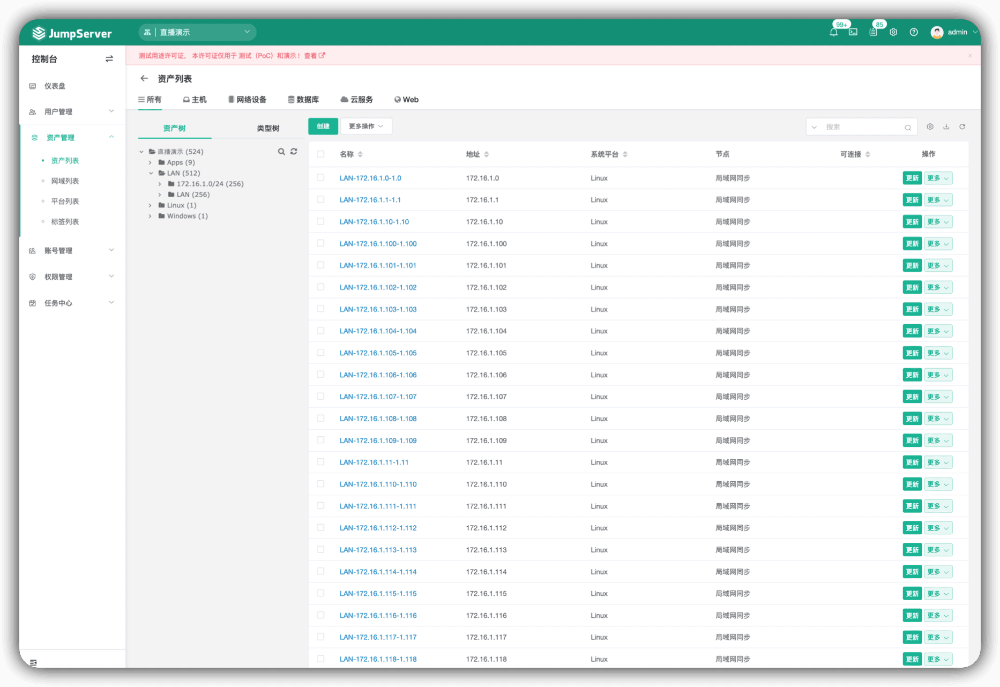
▲ 图3 资产列表三、资产账号进行关联
在JumpServer v3.0版本中，系统用户重构为账号，放弃原先的系统用户中间层。用户直接在资产上添加账号，并且需要添加一系列的凭证来设置账号权限。在进行授权操作时，新版的JumpServer将原先选择“系统用户”的步骤改为选择“账号”。除了指定用户名以外，还设计了包括所有账号、手动账号、同名账号在内的虚拟账号，以对应不同的授权策略，方便管理员快速进行授权。
在比较简单的使用场景中，用户在创建资产时还可以选择账号模版，JumpServer会自动根据模版上的用户名/密码创建账号，操作更为快速便捷。同时，为了提高管理员的操作效率，在创建资产时还可以同步添加资产账号。
在这一版本中，账号强关联到某一个资产。这样一来，JumpServer就可以更加准确地描述一个资产上的所有账号信息。
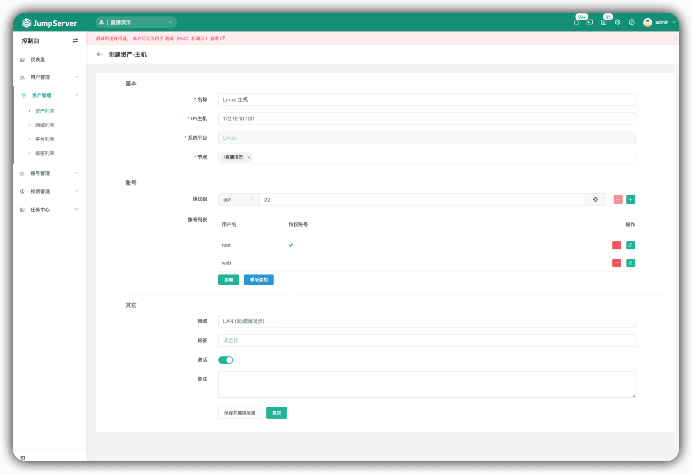
▲ 图4 创建资产界面四、账号管理全面整合
在JumpServer v3.0版本中，新增“账号管理”模块。用户通过账号列表可以看到所有的账号信息，由此可以开展账号收集、账号推送、账号模版、账号改密、账号备份等功能。其中：
■ 账号列表提供了一个全局视图，管理员可以查看到系统内的所有账号信息；
■ 账号模版则相当于一个抽象账号，主要解决了相同账号重复创建的问题。对于不同的资产添加相同的账号时，使用账号模版是一个不错的选择，能够大幅提高管理员的运维效率；
■ 账号推送可以帮助管理员在资产上快速创建一批账号；
■ 账号收集可以帮助管理员将资产上已存在的账号快速纳管到系统中；
■ 账号改密可以帮助管理员批量更新资产账号认证信息；
■ 账号备份可以帮助管理员快速备份账号信息，并以文件的形式发送到管理员的邮箱，管理员可以选择持久留存备份信息，以保证账号的安全性。
五、系统平台重新设计
在JumpServer v3.0版本中，资产与应用合并之后，强化了系统平台的作用。因此，新版本对系统平台也进行了重新设计，对资产进行约束。
原有的系统平台主要用来区分操作系统、编码差异以及Windows配置差异，本质上来说只是起到了标记的作用。而在新版本中，系统平台除了可以区分资产类型，还可以定制一些功能，比如资产是否能够开启网域功能、可以进行哪些协议和配置、是否支持账号切换等，这些功能都可以直接在系统平台上进行定义和设置。
另外，通过新的系统平台，用户还可以灵活定义自动化相关的配置，包括资产探活方式、改密方式、账号推送、su用户切换方式以及收集账号和资产信息收集等。
大多数相同的资产信息可以在系统平台上统一进行设置，对于某些资产特有的信息可以单独在某资产上进行修改。重新设计后的系统平台种类主要包括主机、网络设备、数据库、Web和云服务等。
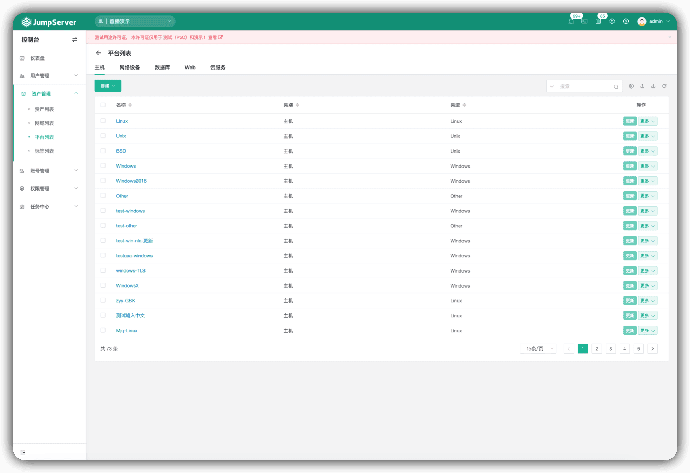
▲ 图5 系统平台列表六、权限管理集中控制
在JumpServer v3.0版本中，权限管理包括资产授权、资产登录以及命令过滤。其中：
■ 资产授权主要控制用户有权限的资产，包括用户、用户组、资产、节点、以及账号。账号的选择包括所有账号、指定账号、同名账号和手动输入；
■ 资产登录主要控制用户登录资产时的附加校验，动作包括拒绝、接受和审批；
■ 命令过滤主要控制用户登录资产后执行命令时的权限控制，动作包括拒绝、接受和审批。
将资产授权、资产登录和命令过滤整合在一起，管理员可以更方便地管控用户授权的资产、登录资产的条件，以及登录资产后的操作。
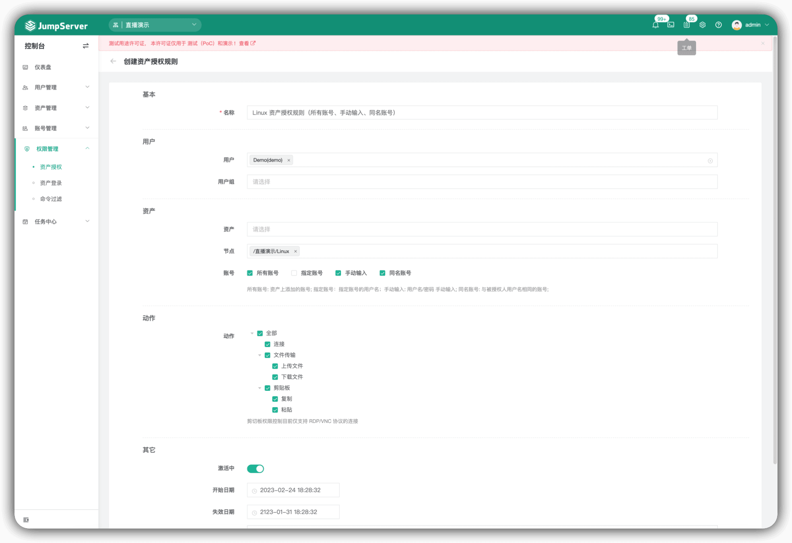
▲ 图6 权限管理-创建资产授权规则七、远程应用自动部署
远程应用是JumpServer未来扩展的核心，也是JumpServer v3.0版本重构中非常重要的部分。JumpServer的研发团队非常重视远程应用的重新设计，在JumpServer v3.0版本中做了重大的更新：
1. RemoteApp远程应用将作为一种连接方式存在，主要用于连接资产，而不再是一种应用类型；
2. RemoteApp的主机池由JumpServer进行统一维护，并且能定时上报状态；
3. 用户提供Windows资产并安装基础组件之后，JumpServer会在应用发布机上代理执行自动化的工作。这样一来，RemoteApp主机就可以自动部署、自动维护；
4. 密码代填功能使用Python框架完成，而不再使用AutoHotKey，准确性更强；
5. 添加RemoteApp类型后，需要声明支持的协议。
远程应用自动部署包括远程应用和应用发布机的一键部署，其中远程应用内置了Chrome Browser、DBeaver Community、Navicat premium 16（企业版）等，在连接远程应用时会拉起调用；远程应用发布机是使用远程应用功能时必备的资源，主要用来安装、连接远程应用。
此外，新版本的JumpServer共有三种连接方式，分别是基于原始协议级别实现的本地客户端连接方式、基于Web实现的Web连接方式，以及基于RemoteApp实现代理的远程应用连接方式。当用户连接资产时，可以根据该资产已有的协议来选择连接方式，系统将会提供多种连接方式供用户选择。
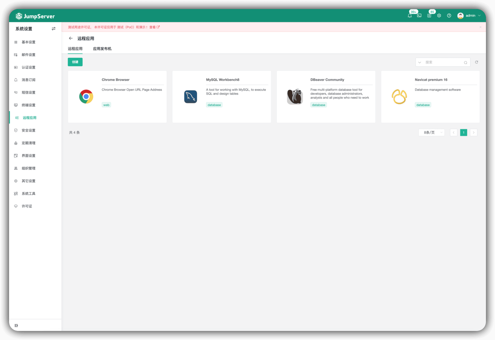
▲ 图7 远程应用-远程应用列表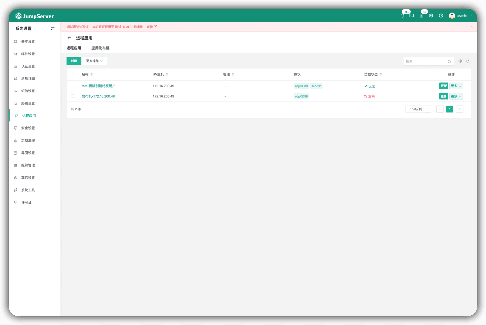
▲ 图8 远程应用-远程应用发布机列表八、审计日志详细记录
在JumpServer v3.0版本中，审计日志所包含的内容除了会话审计、日志审计外，还新增了资源的活动日志。其中：
■ 会话审计包括会话记录、命令记录和文件传输，主要记录用户登录资产的行为信息，并且管理员可以实时监控和终断用户的在线会话；
■ 日志审计包括登录日志、操作日志、改密日志、作业日志，主要记录用户、管理员的基本操作行为信息；
■ 活动日志在“资源详情”中进行查看，是按照时间线记录每一个资源的活动信息，从而让管理员能够及时地掌握资源的使用情况。
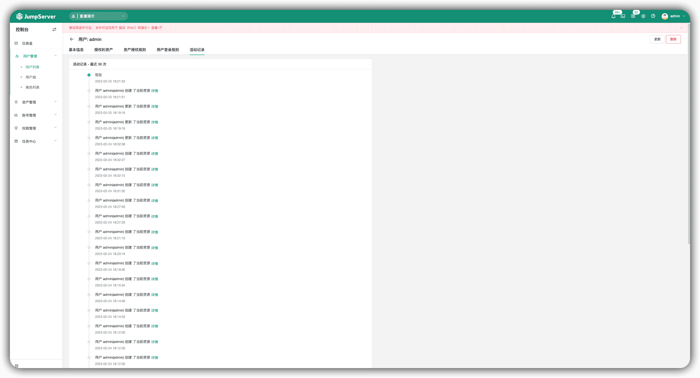
▲ 图9 审计日志-活动日志九、作业中心全面改版
在JumpServer v3.0版本中，我们对作业中心进行了全面改版，主要包括快捷命令、作业管理、模版管理以及执行历史，提高了用户对于批量命令的操作效率。其中：
■ 快捷命令可以帮助用户批量对资产执行相同的命令；
■ 作业管理包括命令作业和Playbook作业，可以帮助用户批量对资产执行Shell命令、PowerShell命令、Python代码或一个Playbook脚本；
■ 模版管理与作业管理相对应，包括命令管理和Playbook管理，方便用户保存、复用相同的执行逻辑；
■ 执行历史主要记录了用户执行的命令、脚本等日志信息。
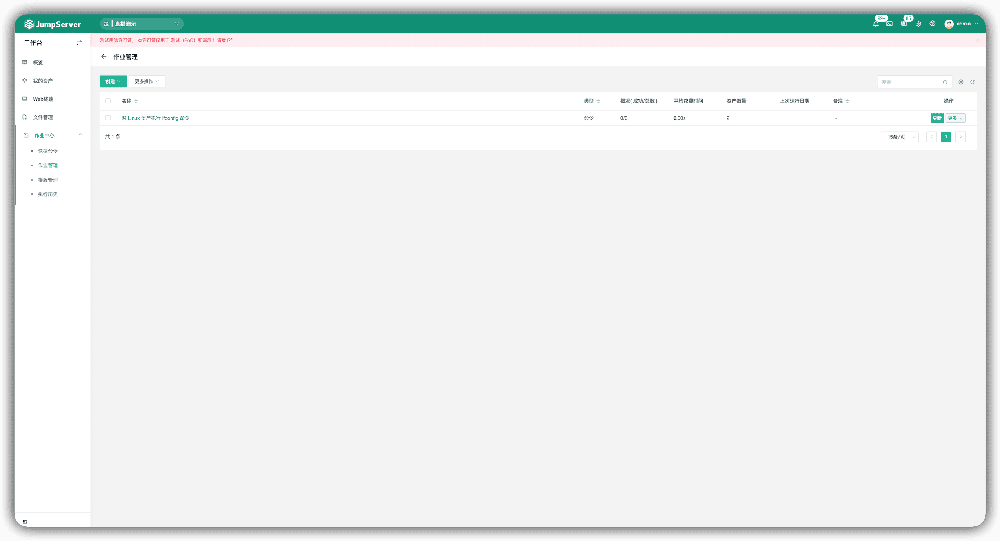
▲ 图10 作业中心-作业管理